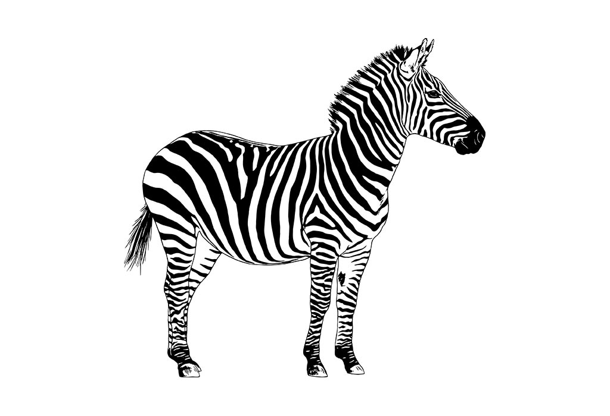

Annalize Van der Poten
Ik ben een Zuid-Afrikaan die zowel vloeiend Engels als Afrikaans spreekt thuis. Ik groeide op in Nelspruit en zat daar op middelbare school, waar ik mijn middelbare schooldiploma behaalde.

Ik streef om een carrière in webdesign na te streven en volg momenteel een uitgebreide cursus om mijn expertise op dit gebied uit te breiden.
Mijn passie voor leren drijft mij voortdurend vooruit en wakkert mijn enthousiasme aan voor het beheersen van nieuwe vaardigheden.
Mijn reis naar webdesign begon op de middelbare school, waar ik mijn grote interesse ontdekte in het creëren van visueel boeiende en functionele digitale ervaringen.
Ik wil graag dieper graven en word gedreven door mijn jeugdigheid en aangeboren vermogen om concepten snel te begrijpen, gekoppeld aan een grote motivatie om uit te blinken in het dynamische domein van webdesign.